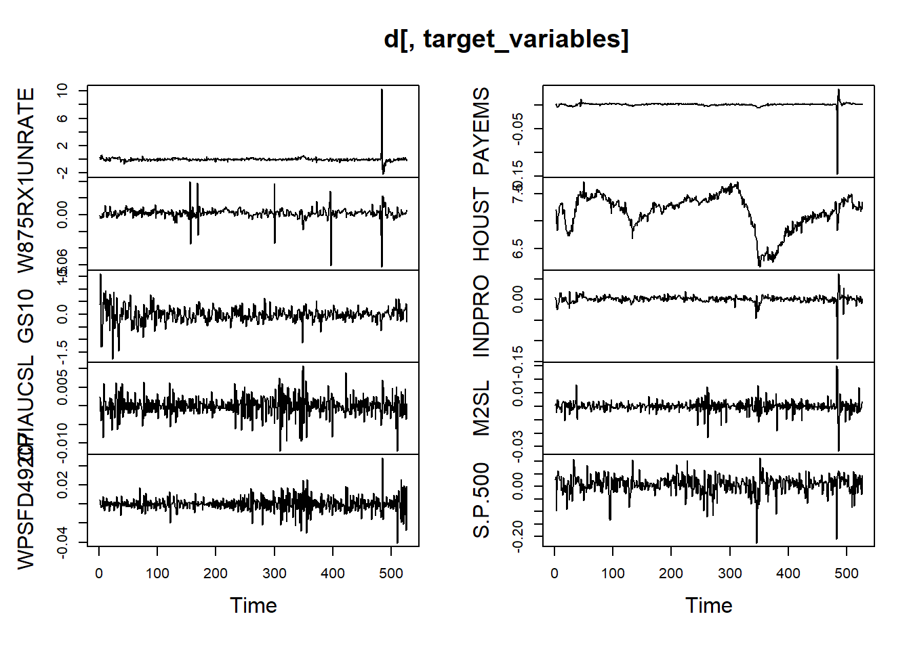
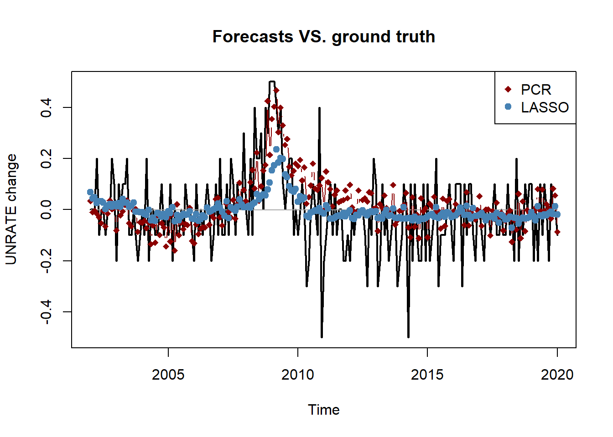
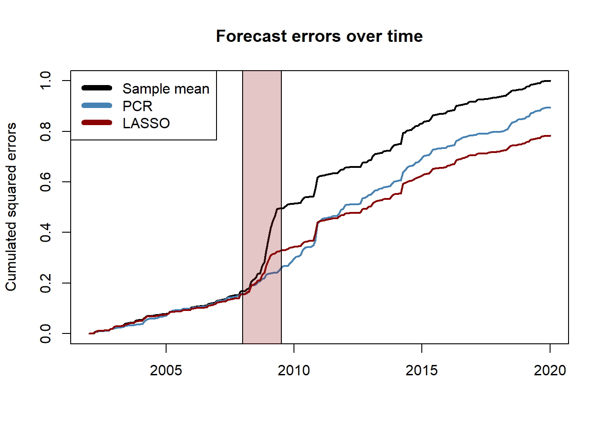

Session 3 Large-dimensional methods for forecasting
In this session we compare the performances of four forecasting methods to predict the monthly change in the U.S. unemployment rate using more than 100 variables from the FRED-MD dataset. In order to deal with the large amount of data, we consider methods based on principal component analysis, penalized likelihood and regression trees.
3.1 Preprocess FRED-MD
The preprocessing of the data is very similar to that of the previous session. The only difference is that we now transform all the series in the dataset using the list of transformation functions of the previous session.
For simplicity, here we remove the columns with missing values. An alternative could be to impute the missing values using some regression technique. However, it is important to notice that in the latter case we should impute the missing values at each step of the forecast evaluation to make sure that no future information is included in the forecasts.
## load data
fredmd <- read.csv("../data/current.csv")
dates <- as.Date(fredmd$sasdate[-1],'%m/%d/%Y')
target_variables <- c("UNRATE", "W875RX1", "GS10", "CPIAUCSL", "WPSFD49207",
"PAYEMS", "HOUST", "INDPRO", "M2SL", "S.P.500")
## get tcodes
tcodes <- fredmd[1,-1]
d <- fredmd[-1, -1]## Transform variables
# transformation functions
transform_fredmd <- list(
function(x) x,
function(x) c(0, diff(x)),
function(x) c(0, 0, diff(x, differences = 2)),
function(x) log(x),
function(x) c(0, diff(log(x))),
function(x) c(0, 0, diff(log(x), differences = 2)),
function(x) c(0, 0, diff( x[2:length(x)]/x[1:(length(x)-1)] - 1))
)
# transform series one by one
for (j in 1:ncol(d)) {
tcode <- tcodes[[j]]
d[,j] <- transform_fredmd[[tcode]](d[,j])
}
## Subset and remove columns with NAs
d <- d[dates >= '1980-01-01', ]
dates <- dates[dates >= '1980-01-01']
idx_na <- (colSums(is.na(d))==0)
d <- d[, idx_na]
plot.ts(d[,target_variables])
3.2 Forecasting algorithms
Below we define the forecasting algorithms that we use in the forecast evaluation.
Notice that at each step of the forecast evaluation we rescale the data so that each variable has mean zero and unit variance. This step is very important for many machine learning algorithms. If the variables have a different magnitude, the optimization procedure involved tend to over-focus on the features with higher magnitude, while we want to exploit the variability of each feature irrespectively of its scale.
Also, we do not explicitly account for outliers in the forecasting algorithms, and we simply discard the Covid period during the evaluation of the results. In this sense, the procedure will tend to benefit those methods that can automatically deal better with the presence of outliers in the data used for estimation.
## Principal Component Regression (PCR)
pcr <- function(d, target, n_components, horizon) {
## Scale the data
d_scaled <- scale(d)
d_mean <- attr(d_scaled, "scaled:center")
d_sd <- attr(d_scaled, "scaled:scale")
## get the target
target_idx <- which(colnames(d) == target)
y <- d_scaled[,target_idx]
## get the principal components of the other variables
x <- d_scaled[,-target_idx]
eigen_list <- prcomp(x, center=FALSE)
f <- eigen_list$x[,1:n_components]
## define the dataframes
t_max <- length(y)
d_pcr <- as.data.frame(cbind(
y = y[(horizon+1):t_max],
y_lag = y[1:(t_max-horizon)],
f[1:(t_max-horizon),])
)
## fit
model <- lm(y ~ ., data = d_pcr)
## forecast
pred <- predict(model, newdata = d_pcr[nrow(d_pcr), ])
## output
pred*d_sd[target] + d_mean[target]
}
# pcr(d, "INDPRO", 4, 1)## Caricamento del pacchetto richiesto: Matrix## Loaded glmnet 4.1-4penalized_reg <- function(d, target, horizon, alpha = 1, nlambda = 100) {
## Scale the data
d_scaled <- scale(d)
d_mean <- attr(d_scaled, "scaled:center")
d_sd <- attr(d_scaled, "scaled:scale")
## get the target and predictors
t_max <- nrow(d)
y <- d_scaled[(horizon+1):t_max, target]
x <- d_scaled[1:(t_max-horizon), ] # include also lagged target variable
## fit the model
model <- glmnet(x = x, y = y, family = "gaussian",
alpha = alpha, nlambda = nlambda)
## forecast
pred <- predict(model, newx = x[nrow(x),])
## Output
pred*d_sd[target] + d_mean[target]
}
# penalized_reg(d, "INDPRO", 1, 1) # one value for each lambda## Random forest
library(randomForest)
forest <- function(d, target, horizon, seed = 1, ntree = 100) {
## Scale the data
d_scaled <- scale(d)
d_mean <- attr(d_scaled, "scaled:center")
d_sd <- attr(d_scaled, "scaled:scale")
## get the target and predictors
t_max <- nrow(d)
y <- d_scaled[(horizon+1):t_max, target]
x <- d_scaled[1:(t_max-horizon), ] # include also lagged target variable
## fit the model
set.seed(seed)
model <- randomForest(x = x, y = y, ntree = ntree)
## forecast
pred <- predict(model, newdata = x[nrow(x),])
## Output
pred*d_sd[target] + d_mean[target]
}
# forest(d, "INDPRO", 1)3.3 Forecast evaluation
We can now run the algorithms and compare their forecasting performances over the 2002-2020 period.
## Initialize objects
forecast_list <- list(
pcr = c(),
ridge = list(),
lasso = list(),
forest = c()
)
# choose target variable and forecast horizon
target <- "UNRATE"
horizon <- 1
# pick the initial window for training and choose the test period
initial_window <- sum(dates < "2002-01-01")
idx_eval <- which(((dates < "2020-02-01")) &
dates >= "2002-01-01") - initial_window
# total steps of the forecast evaluation and selection of the test data
n_steps <- nrow(d) - initial_window - horizon + 1
data_test <- d[(initial_window+horizon):nrow(d), target]## expanding window forecast evaluation
for (s in 1:n_steps) {
cat("\rStep", s, "of", n_steps)
data_train <- d[1:(initial_window+s-1),]
forecast_list$pcr[s] <- pcr(data_train, target,
n_components = 4, horizon = horizon)
forecast_list$ridge[[s]] <- penalized_reg(data_train, target,
horizon = horizon, alpha = 0)
forecast_list$lasso[[s]] <- penalized_reg(data_train, target,
horizon = horizon, alpha = 1)
forecast_list$forest[s] <- forest(data_train, target,
horizon = horizon,
ntree = 100)
}Remark: here we just pick one value of \(\lambda\) among the many that we used for estimating ridge and LASSO regressions. A more rigourous approach would consist in using either information criteria or cross validation to pick the optimal \(\lambda\). We omit this part for simplicity of exposition.
## Comppute the RMSE of the predictions
rmse <- function(y, f) {sqrt(mean((y-f)^2))}
pred_ridge <- sapply(forecast_list$ridge, function(x) x[30])
pred_lasso <- sapply(forecast_list$lasso, function(x) x[8])
pred_mean <- rep(mean(d[1:initial_window, target]), n_steps)
rbind(
mean = rmse(data_test[idx_eval], pred_mean[idx_eval]),
pcr = rmse(data_test[idx_eval], forecast_list$pcr[idx_eval]),
forest = rmse(data_test[idx_eval], forecast_list$forest[idx_eval]),
ridge = rmse(data_test[idx_eval], pred_ridge[idx_eval]),
lasso = rmse(data_test[idx_eval], pred_lasso[idx_eval])
)## [,1]
## mean 0.1600012
## pcr 0.1513172
## forest 0.1676554
## ridge 0.1475805
## lasso 0.1416051## Plot the forecasted values
ground_truth <- ts(data_test[idx_eval], start = c(2002, 1), freq = 12)
pred_benchmark <- ts(pred_mean[idx_eval], start = c(2002, 1), freq = 12)
pred_pcr <- ts(forecast_list$pcr[idx_eval], start = c(2002, 1), freq = 12)
pred_lasso <- ts(pred_lasso[idx_eval], start = c(2002, 1), freq = 12)
plot.ts(ground_truth, type = "l", lwd = 2,
main = "Forecasts VS. ground truth",
ylab = "UNRATE change")
lines(pred_benchmark, type = "l", col = "darkgrey")
lines(pred_pcr, type = "b", col = "darkred", pch = 18)
lines(pred_lasso, type = "b", col = "steelblue", pch = 19)
legend("topright", c("PCR", "LASSO"), col = c("darkred", "steelblue"),
pch = c(18, 19))
## Diebold-Mariano test
library(forecast)
err_benchmark <- data_test[idx_eval] - pred_mean[idx_eval]
err_lasso <- data_test[idx_eval] - pred_lasso[idx_eval]
err_pcr <- data_test[idx_eval] - forecast_list$pcr[idx_eval]
# LASSO
dm.test(err_benchmark, err_lasso, alternative = "greater")##
## Diebold-Mariano Test
##
## data: err_benchmarkerr_lasso
## DM = 3.9017, Forecast horizon = 1, Loss function power = 2, p-value =
## 6.381e-05
## alternative hypothesis: greater##
## Diebold-Mariano Test
##
## data: err_benchmarkerr_pcr
## DM = 1.0484, Forecast horizon = 1, Loss function power = 2, p-value =
## 0.1478
## alternative hypothesis: greater## plot the cumulated squared errors over time
# compute the (normalized) cumulated squared errors and convert to ts object
err2_benchmark <- ts(cumsum((err_benchmark)^2), start = c(2002, 1), frequency = 12)
err2_pcr <- ts(cumsum((err_pcr)^2), start = c(2002, 1), frequency = 12)
err2_lasso <- ts(cumsum((err_lasso)^2), start = c(2002, 1), frequency = 12)
err2_constant <- sum(err_benchmark^2)
# plot
plot.ts(err2_benchmark/err2_constant, lwd = 2,
ylab = "Cumulated squared errors",
main = "Forecast errors over time",
xlab = "")
lines(err2_pcr/err2_constant, col = "steelblue", lwd = 2)
lines(err2_lasso/err2_constant, col = "darkred", lwd = 2)
rect(2008,-1,2009.5,1.5,col = rgb(0.6,0.1,0.1,1/4))
legend("topleft", c("Sample mean", "PCR", "LASSO"),
col=c("black", "steelblue", "darkred"), lwd=6)